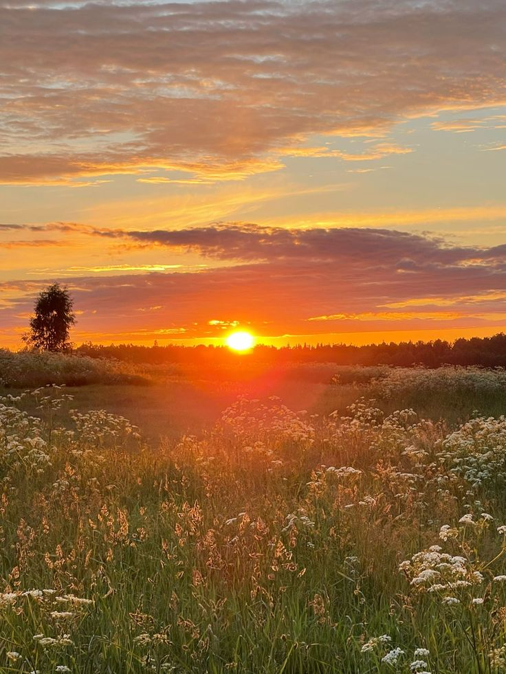

Солнечное лето
Лето - моё самое любимое время года, наполненное теплом, яркими красками и ощущением абсолютной свободы. Это пора длинных световых дней и коротких звездных ночей, когда природа оживает на максимум, радуя нас буйной зеленью и спелыми ягодами.
Именно летом можно забыть о тяжелой зимней одежде, наслаждаться утренней прохладой и планировать самые незабываемые путешествия.
Для меня лето прочно ассоциируется с отдыхом на свежем воздухе, купанием в водоемах и вечерними прогулками на закате. Это идеальное время для того, чтобы поставить жизнь на небольшую паузу, выбраться на пикник с друзьями или просто почитать книгу в тени раскидистого дерева. Теплые летние воспоминания согревают душу на протяжении всего оставшегося года и вдохновляют на новые свершения.

Вы можете узнать больше о климатических особенностях этого сезона в статье о лете на Википедии.